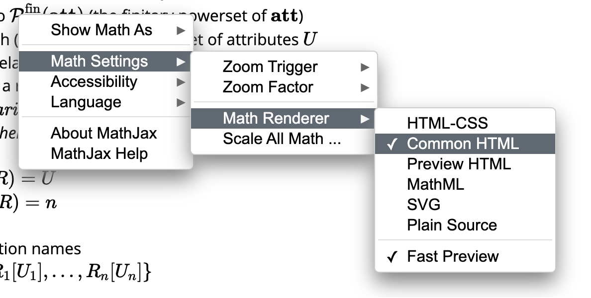

Adding Negation: Algebra and Calculus
Mathjax may have issues to display math symbols in particular styles, such as \(\mathcal{A}\).
You can try to mitigate this by changing the Math Renderer to Common HTML (right click on any math expressions):  \( \newcommand{\att}{\textbf{att}} \) \( \newcommand{\attTotalOrder}{\leq_{\att}} \) \( \newcommand{\dom}{\textbf{dom}} \) \( \newcommand{\Dom}{\textit{Dom}} \) \( \newcommand{\relname}{\textbf{relname}} \) \( \newcommand{\sort}{\textit{sort}} \) \( \newcommand{\arity}{\textit{arity}} \) \( \newcommand{\finPowerSet}{\mathcal{P}^{\text{fin}}} \) \( \newcommand{\dbschema}[1]{\textbf{#1}} \) \( \newcommand{\dbinst}[1]{\textbf{#1}} \) \( \newcommand{\rel}[1]{\textit{#1}} \) \( \newcommand{\attname}[1]{\textit{#1}} \) \( \newcommand{\varSet}{\textbf{var}} \) \( \newcommand{\ans}{\textit{ans}} \) \( \newcommand{\var}{\textit{var}} \) \( \newcommand{\adom}{\textit{adom}} \) \( \newcommand{\tableau}{\textbf{T}} \) \( \newcommand{\free}{\textit{free}} \) \( \newcommand{\body}{\text{body}} \) \( \newcommand{\datalogNeg}{\textit{datalog}^\neg} \)
first-order queries can be expressed in:
- relational algebra
- relational calculus
- relational calculus is essentially first-order predicate calculus without function symbols
- nonrecursive datalog with negation
The Relational Algebra
difference operator (\(-\))
it can only be applied to expressions that have the same sort/arity.
The unnamed relational algebra is obtained by adding the difference operator to the SPCU algebra (usually also with intersection operator). Because union is present, nonsingleton constant relations may be used.
The named relational algebra is obtained in an analogous way.
The unnamed and named relational algebras are equivalent in expressive power.
Nonrecursive Datalog with Negation
To obtain a rule-based language with expressive power equivalent to the relational algebra, we extend nonrecursive datalog programs by permitting negative literals in rule bodies.
nonrecursive datalog with negation (nonrecursive \(\datalogNeg\), nr-\(\datalogNeg\)) has the rule of the form:
\[ q : \quad S(u) \leftarrow L_1, \ldots, L_n \] where
- \(S\) is a relation name
- \(u\) is a free tuple of appropriate arity
- each \(L_i\) is a literal
- literal is an expression of the form \(R(v)\) or \(\neg R(v)\), where
- \(R\) is a relation name and
- \(v\) is a tuple of appropriate arity
- literal is an expression of the form \(R(v)\) or \(\neg R(v)\), where
- the rule is range restricted if each variable \(x\) occurring in the rule occurs in at least one literal of the form \(R(v)\) in the rule body
- unless otherwise specified, all \(\datalogNeg\) rules are range restricted
Semantics
The image of \(\dbinst{I}\) under \(q\) is
\[ \begin{split} q(\dbinst{I}) = \{ v(u) \vert & v \text{ is a valuation and for each } i \in [1, n], \\ & \quad v(u_i) \in \dbinst{I}(R_i), \text{ if } L_i = R_i(u_i), \text{ and } \\ & \quad v(u_i) \not \in \dbinst{I}(R_i), \text{ if } L_i = \neg R_i(u_i) \} \end{split} \]
This is image can be expressed as a difference \(q_1 - q_2\),
where \(q_1\) is an SPC query and \(q_2\) is an SPCU query.
Example
Table Movies
| Title | Director | Actor |
|---|---|---|
| A | X | Y |
List those movies for which all actors of the movie have acted under Hitchcock’s direction.
\[ \begin{split} \rel{Hitch-actor}(z) & \leftarrow \rel{Movies}(x, \text{“Hitchcock”}, z) \\ \rel{not-ans}(x) & \leftarrow \rel{Movie}(x, y, z), \neg \rel{Hitch-actor}(z) \\ \rel{ans}(x) & \leftarrow \rel{Movie}(x, y, z), \neg \rel{not-ans}(x) \end{split} \]
A Bad Example
The following program forms a kind of merging of the first two rules of the previous program.
\[ \begin{split} \rel{bad-not-ans}(x) & \leftarrow \rel{Movies}(x, y, z), \\ & \qquad \quad \neg \rel{Movies}(x’, \text{“Hitchcock”}, z), \\ & \qquad \quad \rel{Movies}(x’, \text{“Hitchcock}, z’) \\ \rel{ans}(x) & \leftarrow \rel{Movie}(x, y, z), \neg \rel{not-ans}(x) \end{split} \]
\(x’\) can be all movies directed by Hitchcock, and \(z\) can be all actors.
Thus, \(\neg \rel{Movies}(x’, \text{“Hitchcock”}, z)\) will exclude \(z\) that are actors in all of Hitchcock’s movies.
Then, \(x\) can be movies that have actors not in all of Hitchcock’s movies.
So, the final \(ans\) actually answers the following query:
List those movies for which no actor is not in all of Hitchcock’s movies.
i.e.
List those movies for which all actors of the movie acted in all of Hitchcock’s movies.
Expressive Power
The relational algebras and the family of nr-\(\datalogNeg\) programs that have single relation output have equivalent expressive power.
The Relational Calculus
The flexibility brings a nontrivial cost:
If used without restriction, the calculus can easily express queries
whose answers are infinite.
The calculus presented in this chapter is sometimes called the domain calculus because the variables range over elements of the underlying domain of values.
Well-Formed Formulas, Revisited
We obtain the relational calculus by adding negation (\(\neg\)), disjunction (\(\lor\)), and universal quantification (\(\forall\)) to the conjunctive calculus with equality.
Both disjunction and universal quantification can be viewed as consequences of adding negation:
- \(\varphi \lor \psi \equiv \neg (\neg \varphi \land \neg \psi)\)
- \(\forall x \, \varphi \equiv \neg \exists x \, \neg \varphi\)
Formal Definition
For a given input schema \(\dbschema{R}\),
the base formulas include:
- atoms over \(\dbschema{R}\)
- equality (inequality) atoms of the form \(e = e’ (e \neq e’)\) for terms \(e, e’\)
the (well-formed) formulas include the base formulas and formulas of the form:
- \(\varphi \land \psi\)
- where \(\varphi\) and \(\psi\) are formulas over \(\dbschema{R}\)
- \(\varphi \lor \psi\)
- where \(\varphi\) and \(\psi\) are formulas over \(\dbschema{R}\)
- \(\neg \varphi\)
- where \(\varphi\) is a formula over \(\dbschema{R}\)
- \(\exists x \, \varphi\)
- where \(x\) is a variable and \(\varphi\) is a formula over \(\dbschema{R}\)
- \(\forall x \, \varphi\)
- where \(x\) is a variable and \(\varphi\) is a formula over \(\dbschema{R}\)
\(e \neq e’\) is viewed as an abbreviation of \(\neg (e = e’)\) in some contexts.
Additional Logical Connectives
- implies (\(\rightarrow\))
- \(\varphi \rightarrow \psi \equiv \neg \varphi \lor \psi\)
- is equivalent to (\(\leftrightarrow\))
- \(\varphi \leftrightarrow \psi \equiv (\varphi \land \psi) \lor (\neg \varphi \land \neg \psi)\)
To be continue… but I am afraid that I will not continue…